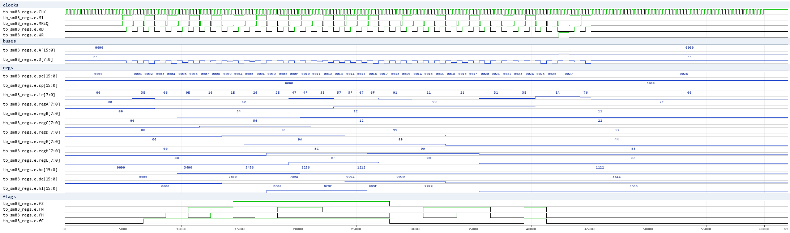
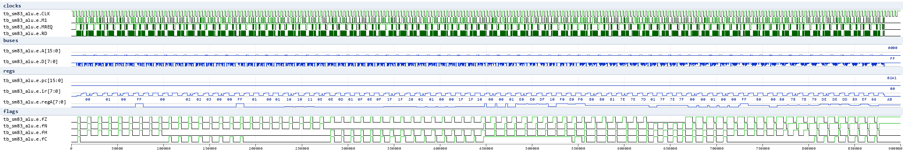
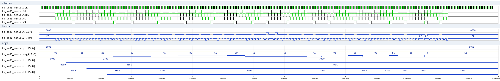
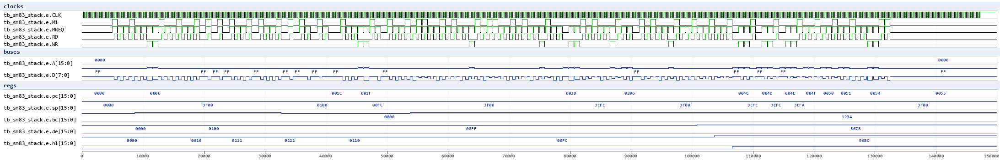
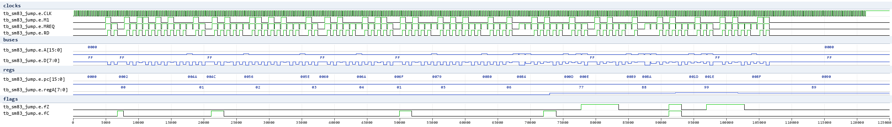
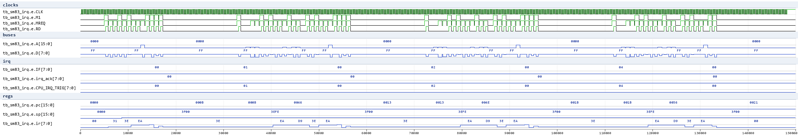
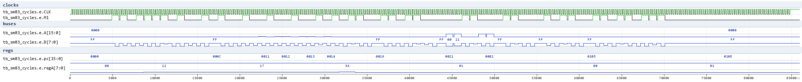
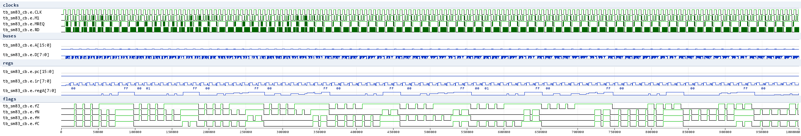
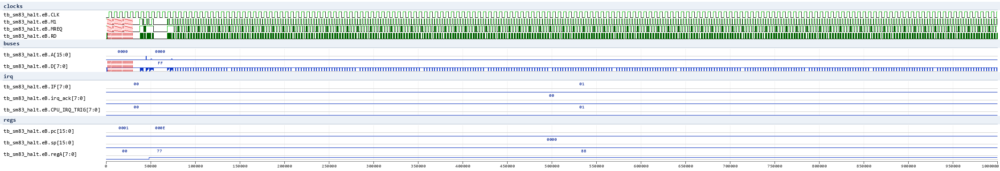

SM83 waves (issue #400)
Waveform documentation for the SM83-core regression suite
(HDL/sm83/Icarus), rendered from the test VCDs with vcd2png.py
(Pillow; .gtkw v3.3.128 save files sit next to each test). All checks
below run on the real SM83 core netlist (HDL/sm83/Top.v SM83Core +
the module files), clocked by external_clk.v with a flat-memory model
(sm83_env.v).
Signal legend (env probes, all under tb_sm83_*.e.):
-
CLK- the ~4.19 MHz oscillator;M1- opcode-fetch pulse of the sequencer;MREQ/RD/WR- external bus strobes -
A[15:0]/D[7:0]- address/data buses pc,sp,ir- program counter / stack pointer / opcode registerregA..regL,bc/de/hl- the register file (hierarchical probes intodmgcore.bot.regs),fZ/fN/fH/fC- flags (zbus bits 7:4)
tb_sm83_regs - register file / immediate loads
Program: 8-bit immediates, register moves, BC/DE/HL pair loads, SP load and
a LD (nn),A store, then HALT. Wave shows PC stepping through the code
while A/B/C/D/E/H/L/BC/DE/HL/SP settle to their loaded values; the final
LD (2000),A store is visible as a WR bus cycle on A=2000, D=7F.

Verified (13 checks): every register/pair value + the memory store + PC at HALT. This is the register-file/load-group regression.
tb_sm83_alu - 8-bit ALU + flags
Straight-line program executing ADD/ADC/SUB/SBC/AND/OR/XOR/CP (immediate
forms) over 8 operand pairs (80 cases, 160 checks). Each case stores the
result A and the flags F (via PUSH AF) to its own stack cells. The wave
shows the bus cycles (PC, opcode fetch on M1, operand bytes) and the
regA/flag trajectory across the cases.

Verified: A result + Z/N/H/C flag law for all 80 cases - the ALU + flag register regression (the "what flags does op X set" oracle).
tb_sm83_mem - memory addressing modes
LD (BC)/(DE)/(HL),A / LD A,(BC)/(DE)/(HL), LD (HL),n, LD A,(nn), LD (nn),A, LDH (n8),A/LDH A,(n8), HLI/HLD auto-increment/decrement (both load and store directions). Each op writes its observable result to a dedicated cell; 18 checks.

tb_sm83_stack - 16-bit moves / stack / control flow
LD rr,nn, PUSH/POP rr (incl. AF), 16-bit INC/DEC, ADD HL,rr, ADD SP,e, LD HL,SP+e, LD (nn),SP, CALL/RET, JP cc. Subroutines at fixed addresses ($0080/$0150) are reached only through absolute CALL/JP targets; markers stamp each taken/not-taken path (15 checks). The wave shows SP sliding down on pushes and the stack roundtrip.

tb_sm83_jump - conditional relative jumps + RST
JR NZ/Z/NC/C taken and not-taken paths + RST 08/18 with the vector-page handlers and the return-address push/pop (11 checks). Boot JR skips the RST pages at $0008/$0018.

tb_sm83_irq - interrupt dispatch (IE/IME/IF, HALT wake)
Three phases on one boot: IE = VBlank/EI/HALT, then the test asserts IF bit0 -> the core wakes, pushes PC, clears IF via CPU_IRQ_ACK and vectors to $40; handler stores 0x5A and RETIs. Phases 2/3 do the same for LCDSTAT ($48) and Timer ($50). IE lives inside the core ($FFFF write); IF is the env model (source set, ack-cleared) like the SoC MMIO.

Verified (8 checks): all three handlers ran, IF cleared after each ACK, SP returned to $3F00 after RETI, final PC at the end HALT.
tb_sm83_cycles - instruction T-state timing
Measures each executed instruction's duration as the CLK periods between successive M1 rising edges and compares to the documented SM83 cycle counts (32 checks): NOP 4, LD r,n 8, LD r,r 4, INC/DEC 4, ADD A,n 8, LD rr,nn 12, ADD HL,rr 8, LD (HL),n 12, LD A,(HL) 8, INC/DEC (HL) 12, JR taken 12 / not-taken 8, CALL 24, RET 16, JP 16.

Verified: all 32 measured intervals equal the documented values - the SM83 timing oracle for the netlist (add a candidate opcode between two M1s and its measured duration answers "how many cycles does it take").
tb_sm83_cb - CB-prefix rotate/shift/bit ops
Straight-line program executing the A-only rotates (RLCA/RLA/RRCA/RRA), the CB-prefixed RLC/RRC/RL/RR/SLA/SRA/SWAP/SRL on A and BIT/RES/SET b,A (128 cases, 256 checks), each case capturing result A and the flags F via PUSH AF. The wave shows the CB byte fetch producing an extra M1 pulse before the opcode fetch.

Measured law (netlist): CB ops set Z from the result, BIT b,A sets Z = ~A[b] with H=1, RES/SET leave the flags untouched. The A-only rotates (RLCA/RLA/RRCA/RRA) clear Z - the documented SM83 A-rotate quirk, verified on the real netlist.
tb_sm83_halt - HALT modes (IME/IF law)
Three HALT scenarios on the real core: a clean stop (IME=0, IE=0 - the PC stays at HALT+1), an IF wake while halted with IME=0 (execution resumes after the HALT, no interrupt vector is taken), and the classic halt-bug setup (IF pending when HALT executes - the core does not stop and still never dispatches, because IME=0). The wave shows scenario B: HALT, the IF assertion, wake and the resumed instruction stream.

Verified: no vector runs when IME=0 (the $40 handler marker stays clear)
in every scenario; with IME=1 the dispatch path is covered by
tb_sm83_irq instead.